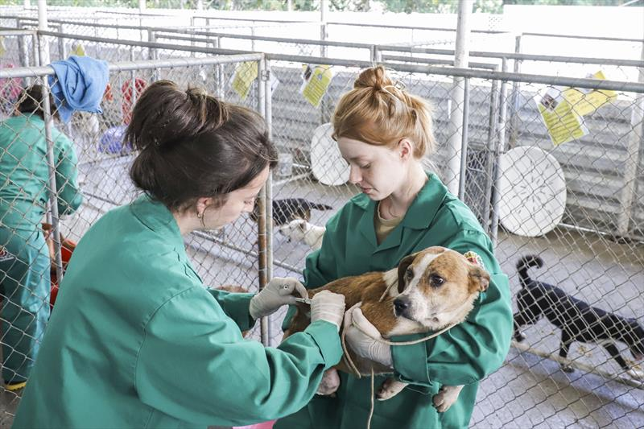

Nossa História
O Instituto Pata Feliz nasceu em 2015 do sonho de um pequeno grupo de amigos determinados a mudar a realidade de animais abandonados. O que começou com resgates pontuais se tornou uma das principais organizações de proteção animal da região.
